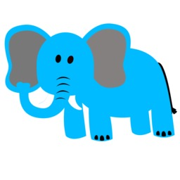

El título de ésta página usa la fuente externa del tipo OpenType que se llama The Goldsmith Vintage
Se ha añadido un menu del tipo flex horizontal que incluye bordes redondeados.
Este marco contiene un color de fondo degradado, y un color de fuente definido de #CCCCCC
Diferentes estilos de encabezados:
Encabezado 1
Encabezado 2
Encabezado 3
A continuación voy a escribir caracteres especiales, tales como el menor que <, el mayor que > o el ampersand &.
Esta es una muestra sobre cómo mostrar una imagen vectorial:
Esta otra es una muestra de imagen de mapa de bits:
Y por último, éste es un video importado de Youtube: